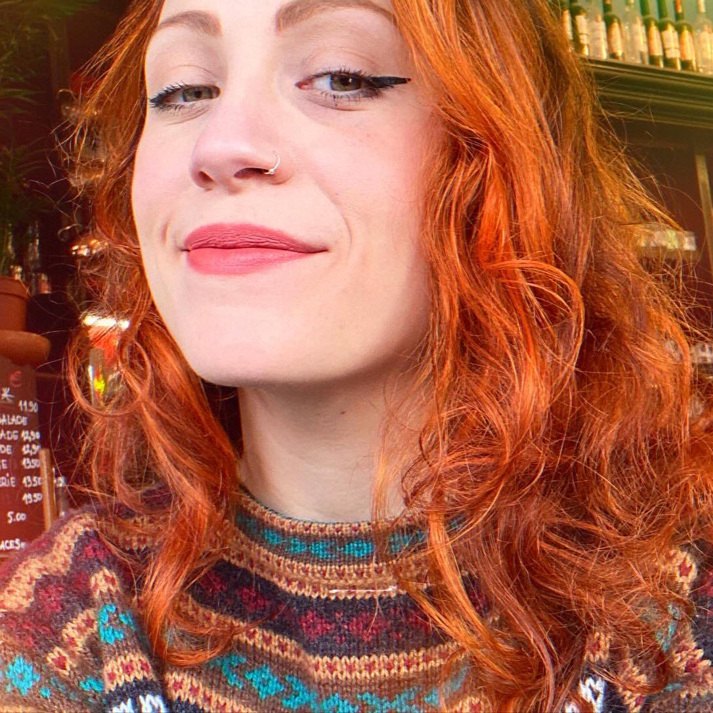

Francesca Battistini
francbauhaus@gmail.com

Biografia
Nasco a roma nel 1992 precisamente all'Isola Tiberina
Fin da piccola mi sono sempre interfacciata con il mondo
dell'informatica, pensavo fosse un gioco, non mi rendevo conto.
Ho conseguito il liceo "perito agrario" e dopo il liceo ho iniziato
l'università matematica indirizzo Geologia. posso definirmi una malata
della matemica e della chimica
dopo due anni di Università purtroppo ho deciso di lasciare, per cause
famigliari.
Ho iniziato a lavorare in vari negozi al centro di Roma, innamorandomi
dei monumenti e della bellezza della vita.
appena ho avuto dei soldi per me, ho iniziato a studiare grafica e
illustrazione e ho iniziato e finito due accademie di illustrazione
digitale
Ho lavorato a molti loghi e a molti negozi e ora ho iniziato a capire
che potevo puntare su di me e chiedere di più per me stessa.
Hobby :
Sono una giocatrice di ruolo, faccio teatro e ogni
tanto suono la batteria
amo la natura e adoro campeggiare quando possiamo io e mio marito
fuggiamo in qualche bosco o montagna.
Sono un'amante delle piante di conseguenza e anche degli animali,
qualsiasi tipo dai serpenti ai gattini, ma non li metterei insieme!!!
Cose che mi descrivono Sono una persona estroversa, mi piace
organizzare feste e eventi
Di base non mi lascio mai perdere d'aniamo
Ma questo accade perchè so cosa signifa cadere ma ho avuto spesso il
coraggio di rialzarmi
casa è un posto, ma io voglio farlo
diventare un concetto quando sono con le persone che più amo.
Amo cucinare e mangiare, prevalentemente pratico una cucina Romana ma
essendo di origine Siciliana e Romagnola spesso mi butto anche in nuove
ricette
Adoro leggere libri di avventure e guardare film romantici. Ma devo
ammettere che i miei preferiti sono sulla fantascienza.
Gatti non ne ho mai abbastanza, credo
che gatti e anni non si debbano mai chiedere ad una donna!